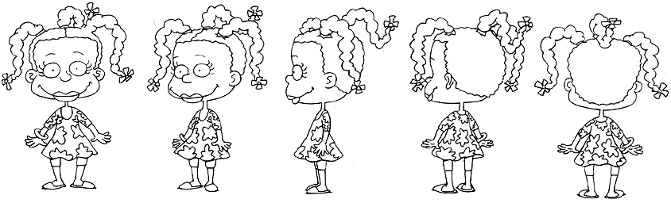
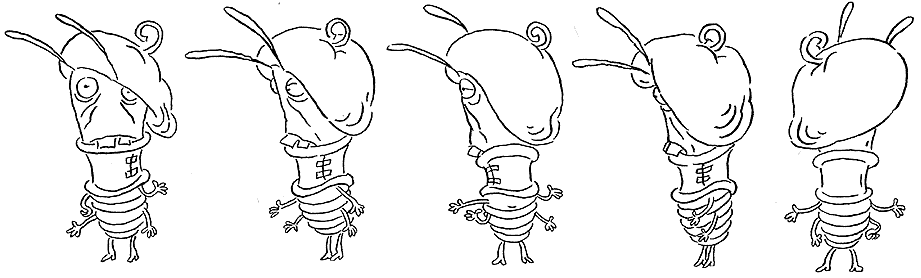

PART THREE:
TURNAROUNDS

Once you have practiced drawing a character from a frontal view, the next step is to do a "Turnaround".
Turnarounds show the figure from 3 or more angles, including front, side and back.
This gives the animators necessary details when composing a scene.
After all, cartoons don't stand still and as the characters move and change perspective, one needs to get a good idea how they will look in every position.

Cartoons aren't the only medium that uses turnarounds.
In the world of fashion design they are essential, and most comic book companies require turnarounds for each character before they appear in print.
Not only that, but they are great practice in learning to see a figure in more than one dimension.
As more and more artists are becoming adept at using 3D computer design programs, the more essential it is to begin seeing things from many different angles.